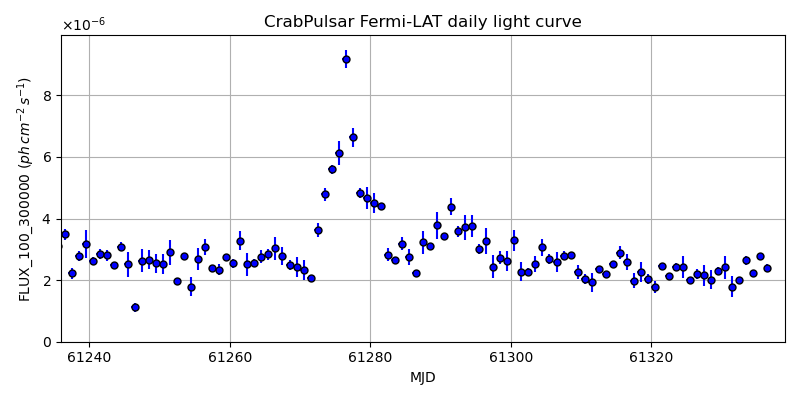
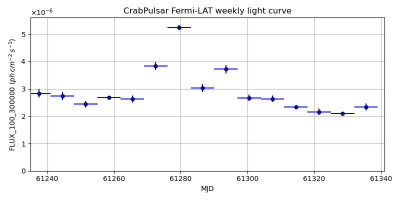
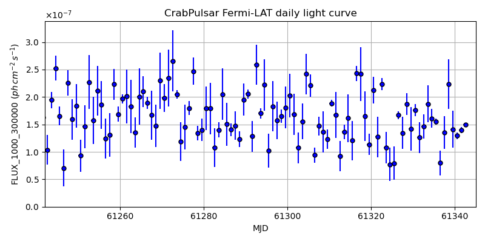
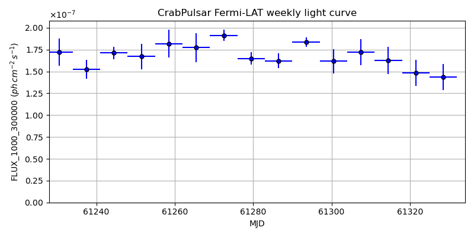

LAT Lightcurve site: https://fermi.gsfc.nasa.gov/ssc/data/access/lat/msl_lc/source/Crab_Pulsar
NED: Query
Time of last update of this page: UT: 2026-10-17 15:16 (MJD: 61330.637)
| Property | Value |
|---|---|
| R.A. | 5:34:31.92 |
| Dec. | 22:00:50.4 |
| z | 0.000 |
| 3FGL SpectrumType | |
| 3FGL PL Index | -1.00 |
| 3FGL Flux_100_300000 | -1.00e+00 |
| 3FGL Flux_1000_300000 | -1.00e+00 |
| 3FGL Flux >200 GeV | -1.00e+00 |
| 3FGL Extrap. Crab >200 GeV | -1.00 |
| 3FGL Flux After EBL Absorption >200GeV | -1.00e+00 |
| 3FGL EBL Crab Fraction >200GeV | -1.00 |

| MJD | dMJD | Flux | dFlux | Frac3FGL | FracCrab>200GeV | EBLFracCrab>200GeV |
|---|---|---|---|---|---|---|
| 61325.50 | 0.50 | 1.99e-06 | 0.00e+00 | 0.00 | 0.00 | -0.00 |
| 61326.50 | 0.50 | 2.21e-06 | 0.00e+00 | 0.00 | 0.00 | -0.00 |
| 61327.50 | 0.50 | 2.16e-06 | 0.00e+00 | 0.00 | 0.00 | -0.00 |
| 61328.50 | 0.50 | 2.01e-06 | 0.00e+00 | 0.00 | 0.00 | -0.00 |
| 61329.50 | 0.50 | 2.29e-06 | 0.00e+00 | 0.00 | 0.00 | -0.00 |

| MJD | dMJD | Flux | dFlux | Frac3FGL | FracCrab>200GeV | EBLFracCrab>200GeV |
|---|---|---|---|---|---|---|
| 61293.50 | 3.50 | 3.72e-06 | 0.00e+00 | 0.00 | 0.00 | -0.00 |
| 61300.50 | 3.50 | 2.67e-06 | 0.00e+00 | 0.00 | 0.00 | -0.00 |
| 61307.50 | 3.50 | 2.63e-06 | 0.00e+00 | 0.00 | 0.00 | -0.00 |
| 61314.50 | 3.50 | 2.34e-06 | 0.00e+00 | 0.00 | 0.00 | -0.00 |
| 61321.50 | 3.50 | 2.16e-06 | 0.00e+00 | 0.00 | 0.00 | -0.00 |

| MJD | dMJD | Flux | dFlux | Frac3FGL | FracCrab>200GeV | EBLFracCrab>200GeV |
|---|---|---|---|---|---|---|
| 61325.50 | 0.50 | 7.94e-08 | 0.00e+00 | 0.00 | 0.00 | -0.00 |
| 61326.50 | 0.50 | 1.67e-07 | 0.00e+00 | 0.00 | 0.00 | -0.00 |
| 61327.50 | 0.50 | 1.34e-07 | 0.00e+00 | 0.00 | 0.00 | -0.00 |
| 61328.50 | 0.50 | 1.87e-07 | 0.00e+00 | 0.00 | 0.00 | -0.00 |
| 61329.50 | 0.50 | 1.42e-07 | 0.00e+00 | 0.00 | 0.00 | -0.00 |

| MJD | dMJD | Flux | dFlux | Frac3FGL | FracCrab>200GeV | EBLFracCrab>200GeV |
|---|---|---|---|---|---|---|
| 61293.50 | 3.50 | 1.84e-07 | 0.00e+00 | 0.00 | 0.00 | -0.00 |
| 61300.50 | 3.50 | 1.62e-07 | 0.00e+00 | 0.00 | 0.00 | -0.00 |
| 61307.50 | 3.50 | 1.72e-07 | 0.00e+00 | 0.00 | 0.00 | -0.00 |
| 61314.50 | 3.50 | 1.63e-07 | 0.00e+00 | 0.00 | 0.00 | -0.00 |
| 61321.50 | 3.50 | 1.48e-07 | 0.00e+00 | 0.00 | 0.00 | -0.00 |
--------------------------------------------------------- Using user-supplied coords: 5:34:31.92 22:00:50.4 2000 --------------------------------------------------------- FLWO UT night of: 2026-10-18 Local Sid. @ Midnight: 01:23 Sunset (-15.0) (local, UT): 18:56 01:56 Sunrise (-15.0) (local, UT): 05:22 12:22 Moonrise (local, UT): Moonset (local, UT): 22:59 05:59 Moon phase: 0.47 --------------------------------------------------------- AzTime LSID UT Obj_el Obj_az Mn_el Mn_az Sep. --------------------------------------------------------- 18:56 20:18 01:56 -23.7 41.2 30.5 195.3 156.0 19:26 20:48 02:26 -19.2 47.0 28.5 202.5 155.8 19:56 21:18 02:56 -14.3 52.2 25.9 209.3 155.7 20:26 21:48 03:26 -9.1 56.9 22.6 215.6 155.5 20:56 22:19 03:56 -2.3 61.3 18.8 221.3 155.4 21:26 22:49 04:26 2.3 65.2 14.5 226.6 155.2 21:56 23:19 04:56 8.1 69.0 9.9 231.4 155.0 22:26 23:49 05:26 14.1 72.5 5.0 235.7 154.8 22:56 00:19 05:56 20.2 75.9 0.2 239.8 154.6 23:26 00:49 06:26 26.5 79.3 -5.5 243.5 154.4 23:56 01:19 06:56 32.8 82.7 -11.3 247.0 154.2 00:26 01:49 07:26 39.1 86.2 -17.0 250.4 153.9 00:56 02:19 07:56 45.5 89.9 -22.8 253.6 153.7 01:26 02:49 08:26 51.9 94.2 -28.7 256.7 153.4 01:56 03:19 08:56 58.3 99.2 -34.7 259.8 153.1 02:26 03:49 09:26 64.5 105.7 -40.7 263.0 152.8 02:56 04:20 09:56 70.5 115.0 -46.8 266.4 152.5 03:26 04:50 10:26 75.9 130.4 -52.8 270.1 152.2 03:56 05:20 10:56 79.7 158.8 -58.9 274.3 151.9 04:26 05:50 11:26 79.9 198.9 -64.9 279.6 151.6 04:56 06:20 11:56 76.2 228.3 -70.8 287.0 151.3 05:22 06:46 12:22 71.6 242.6 -75.7 297.1 151.0 --------------------------------------------------------- Dark hours >55 deg.: 3.69 srcstart (UT): 2026-10-18 08:40 srcend (UT): 2026-10-18 12:22